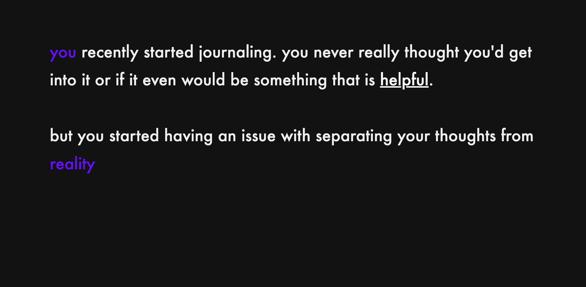
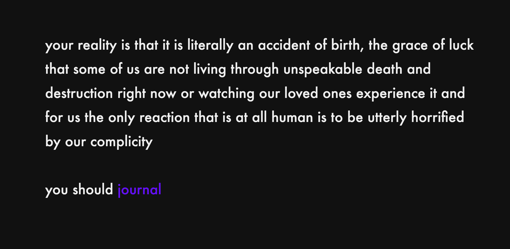
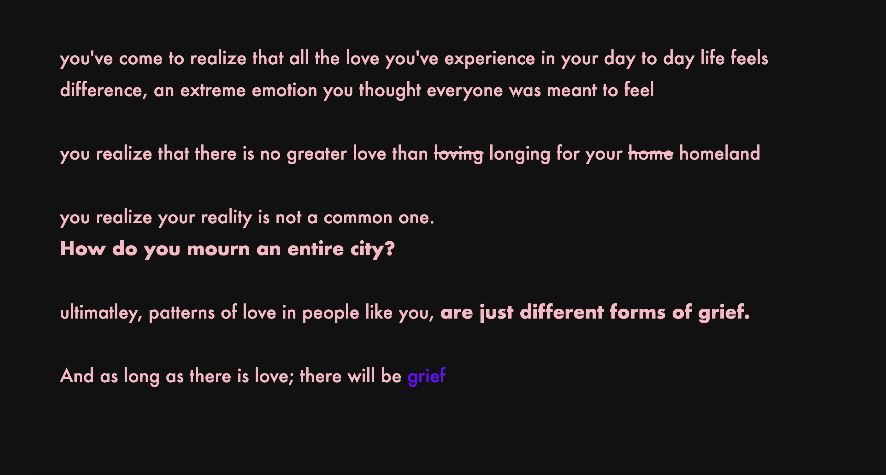
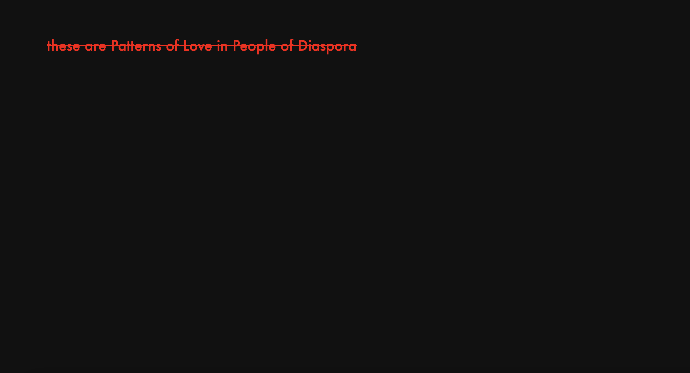

Twine · Python




An interactive, text-based narrative exploring patterns of love in the diaspora. Built in Twine, the project experiments with storytelling through text alone, using nonlinear branching choices to guide users through themes of identity, longing, and connection in an immersive digital space.
This project investigates how text-based interactivity can evoke deep emotional engagement without visuals. Drawing from oral histories, literature, and personal narratives, it reimagines love and memory in diasporic communities through fragmented storytelling and nonlinear pathways.
Built in Twine – Exploring interactive fiction through hypertext and branching structures.
Narrative-Driven UX – Designed for a seamless reading experience with intuitive navigation.
Minimalist Interface – Focuses on typography, pacing, and user-driven exploration to enhance immersion.
By stripping away visuals, this project challenges how we experience digital storytelling, proving that text alone can be just as visceral, interactive, and evocative.